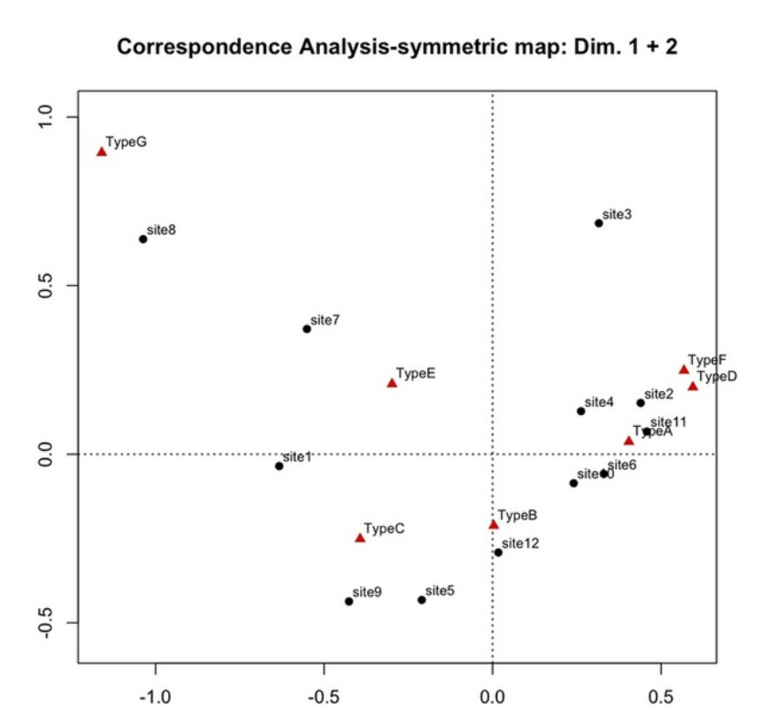
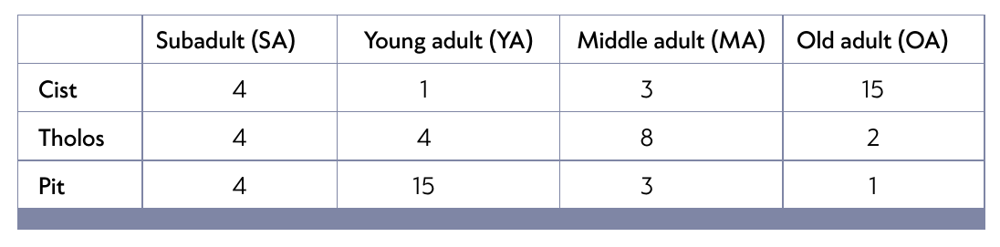
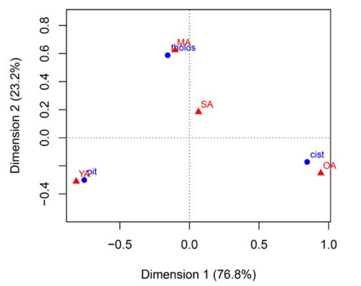
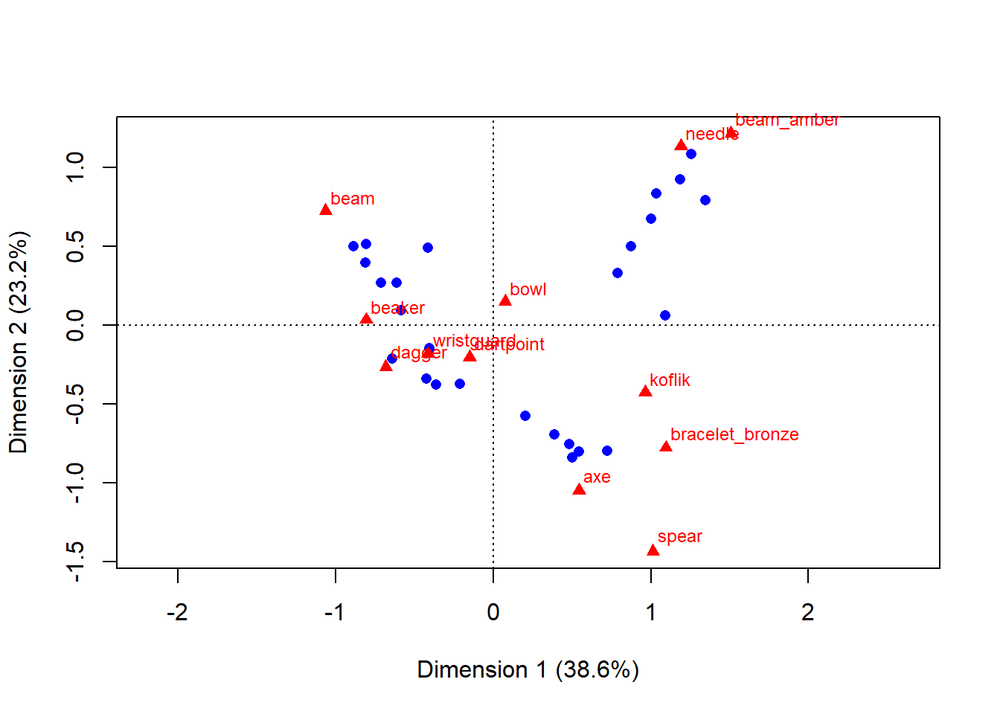
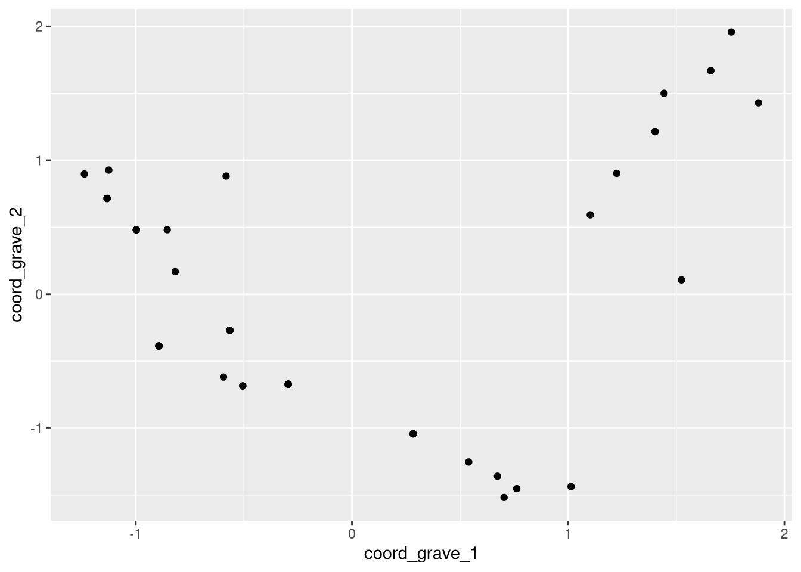
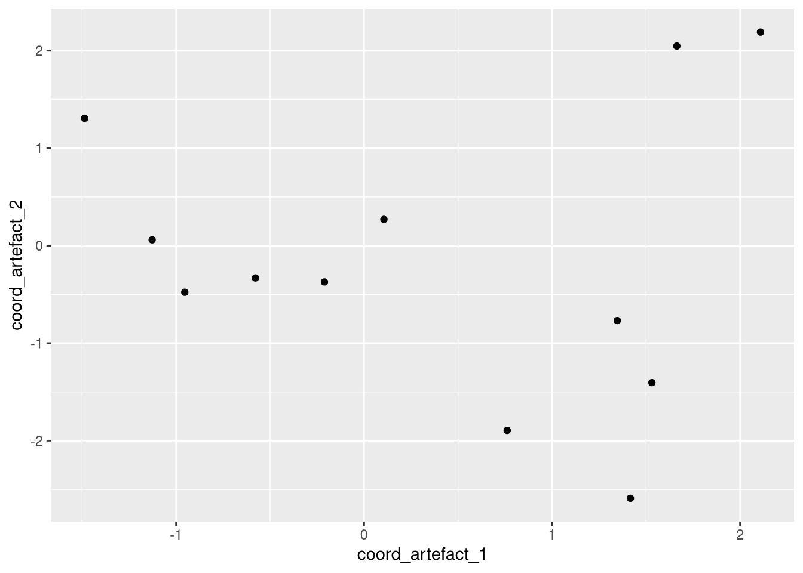
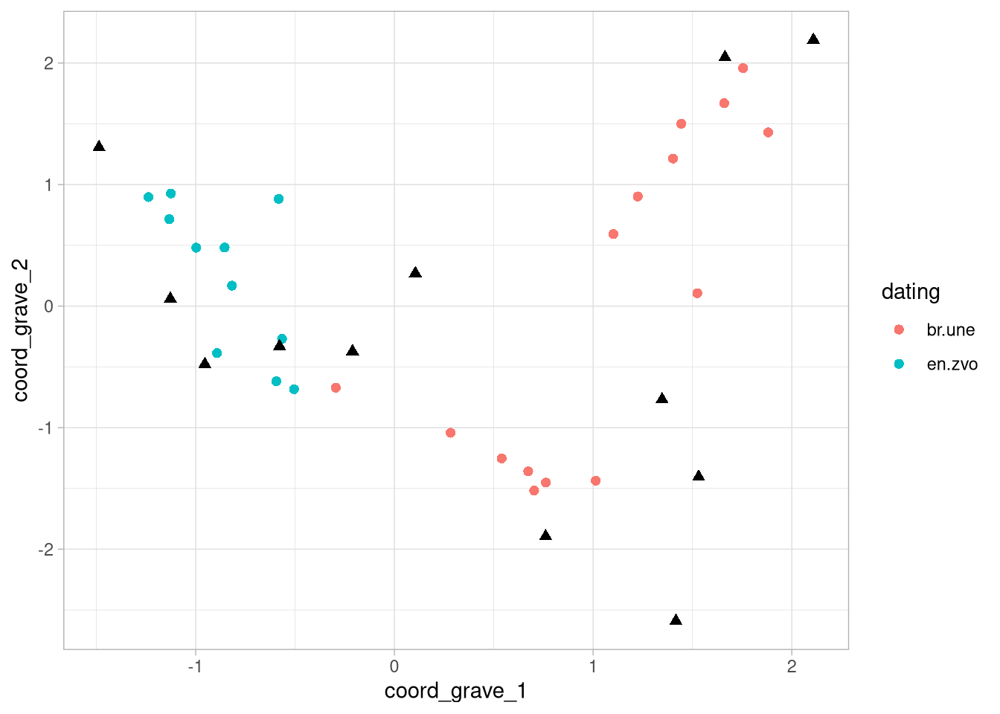
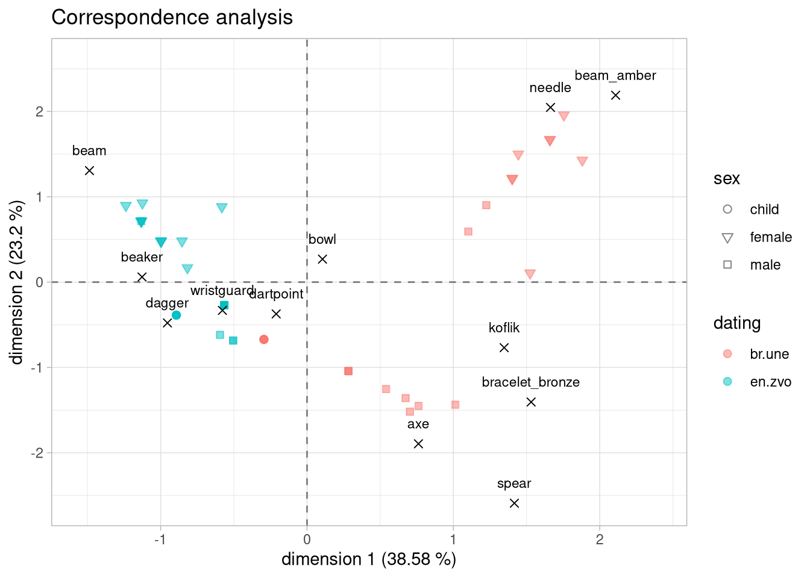

install.packages("ca")
install.packages("tibble")Correspondence analysis
Introduction
In this course, you will learn how to:
- do quick correspondence analysis in R
- transform your data from long format to wide format
- replace NAs with 0
- create “tibble” type of tables from vectors
- visualize the results of the correspondence analysis in
ggplot()
Correspondence analysis (CA) - what is it?
- one of the multivariate statistical methods
- helps you to explore similarities in your data

- the above example shows how the biplot can be used to identify the similarities between different archaeological sites, based on the proportion of different ceramic types found there
- note that there are two groups of data: archaeological sites and ceramic types
- “similarities are based on proportion…” means that we have counts of ceramic types for each site
Correspondence analysis (CA) - what do I need?
- data in the form of a contingency table with the counts of two or more categorical variables
- two groups of data: one group in the rows, second in the columns
- examples: graves in the rows and counts of their artefacts in the columns, sites and counts of ceramic types, archaeological layers and counts of the chipped stone industry,…
- “presence / absence” variables are also suitable but their values have to be replaced by 1 and 0
- NAs have to be replaced by 0
Contingency table
- an example of a contingency table:

- and the biplot showing the result of the CA

Doing CA on artificial archaeological data
Prerequisites
Packages:
here,dplyr,tidyr,ca,tibble,ggplot2
Data:
- database “eneol_bronze_burials.csv”
Start:
- open your R Project, create a new script file
- load packages
here,dplyr,tidyr,ggplot2 - install and load packages
caandtibble - import the data “eneol_bronze_burials.csv” into R
- observe data - what is in rows? what are the variables?
CA - start
- install new packages
- load the packages
library(here)
library(dplyr)
library(tidyr)
library(tibble)
library(ggplot2)
library(ca)- import the data
df_graves <- read.csv(here("lect/w04/data/burials.csv"))- observe the data:
df_graves |>
arrange(grave_number) |> head(8) grave_number dating sex artefact_type artefact_count artefact_material
1 900 en.zvo male beaker 3 ceramics
2 900 en.zvo male dartpoint 5 lithics
3 900 en.zvo male wristguard 1 lithics
4 900 en.zvo male dagger 1 copper
5 900 en.zvo male axe 1 copper
6 900 en.zvo male bowl 1 ceramics
7 901 en.zvo female beaker 1 ceramics
8 901 en.zvo female dartpoint 2 lithicsstr(df_graves)'data.frame': 230 obs. of 6 variables:
$ grave_number : int 900 901 902 903 904 905 906 907 908 909 ...
$ dating : chr "en.zvo" "en.zvo" "en.zvo" "en.zvo" ...
$ sex : chr "male" "female" "male" "female" ...
$ artefact_type : chr "beaker" "beaker" "beaker" "beaker" ...
$ artefact_count : int 3 1 1 1 1 1 1 2 1 1 ...
$ artefact_material: chr "ceramics" "ceramics" "ceramics" "ceramics" ...Research questions
- are there differences between artefacts in different dating periods?
- are there differences between the sexes?
- are there any similar groups of graves?
- to answer the question, we will use correspondence analysis to observe similarities between graves (first group of data) based on similarities in proportion of their artefacts (second group of data)
- keep in mind that this database is artificial and for teaching purposes only. Although it might, to some extent, resemble real archaeological data, some aspect were purposely modified to better illustrate the logic of the correspondence analysis
Tidying data
- we see that all artefacts are stored in the variable “artefact_type” and their count in “artefact_count”
- this table is a type of “long table”, which we were discussing in the last lecture
- to do a correspondence analysis, we need to transform this table into so called “wide table”, where one observation will be one grave, and each type of artefact will be one variable
- in other words, we need to have a table where:
- one group of data is in rows - in this case graves
- second group of data is in columns - in this case the counts of artefact types
widening data with tidyr::pivot_wider()
remember the function
pivot_longer()from thetidyrpackage? Now we will use its reverse sisterpivot_wider()syntax within the pipeline:
df |> pivot_wider(names_from = , values_from = )names_from- defines the column from which the new variables will be created (e.i. the values in this column will become variables)values_from- defines from which column the count values will be taken
df_graves_wide <- df_graves |>
select(-artefact_material) |>
pivot_wider(
names_from = artefact_type,
values_from = artefact_count
)- note that we have removed the variable “artefact_material”
head(df_graves_wide)# A tibble: 6 × 15
grave_number dating sex beaker dartpoint wristguard dagger axe bowl beam
<int> <chr> <chr> <int> <int> <int> <int> <int> <int> <int>
1 900 en.zvo male 3 5 1 1 1 1 NA
2 901 en.zvo fema… 1 2 1 NA NA 1 2
3 902 en.zvo male 1 2 1 NA NA 1 NA
4 903 en.zvo fema… 1 2 1 NA NA 1 2
5 904 en.zvo male 1 2 1 NA NA 1 NA
6 905 en.zvo fema… 1 2 1 NA NA 1 3
# ℹ 5 more variables: beam_amber <int>, koflik <int>, bracelet_bronze <int>,
# needle <int>, spear <int>Dealing with NAs
- now we have to deal with the NAs and turn them into 0
- we will use function
dplyr::mutate()because we want to change specific values based on specific conditions
df_graves_wide <- df_graves_wide |>
mutate(
across(beaker:spear, ~ replace_na(.x, 0))
)
head(df_graves_wide)# A tibble: 6 × 15
grave_number dating sex beaker dartpoint wristguard dagger axe bowl beam
<int> <chr> <chr> <int> <int> <int> <int> <int> <int> <int>
1 900 en.zvo male 3 5 1 1 1 1 0
2 901 en.zvo fema… 1 2 1 0 0 1 2
3 902 en.zvo male 1 2 1 0 0 1 0
4 903 en.zvo fema… 1 2 1 0 0 1 2
5 904 en.zvo male 1 2 1 0 0 1 0
6 905 en.zvo fema… 1 2 1 0 0 1 3
# ℹ 5 more variables: beam_amber <int>, koflik <int>, bracelet_bronze <int>,
# needle <int>, spear <int>Calculating CA with the function ca()
- we can conduct the correspondence analysis with the function
ca::ca() - NOTE that the CA can be done only on columns with integer data
- to proceed, we first need to select the columns with artefact counts, and then run the
ca()function - we will incorporate the
ca()into the pipe - in this stage it is usefull to use
colnames()function to see the column names - in order to CA to work, the sum of each row and column must be greater than zero
colnames(df_graves_wide) [1] "grave_number" "dating" "sex" "beaker"
[5] "dartpoint" "wristguard" "dagger" "axe"
[9] "bowl" "beam" "beam_amber" "koflik"
[13] "bracelet_bronze" "needle" "spear" - now we will define which columns to keep for analysis, incorporate the
ca()function into the pipe and store the result as “ca_result”
ca_result <- df_graves_wide |>
select(beaker:spear) |>
ca()visualising CA result with plot()
- to quickly visualize the result, we will use the R base function
plot()and create the so called biplot:
plot(ca_result)
- this biplot is basicaly a scatterplot
- first group of data - graves - are represented as blue dots, second group - artefacts - are represented as red triangles
- each grave and each artefact has it’s own coordinates
- the closer the graves or artefacts are to each other, the more similar they are
Observing the results structure
- at this stage, we cannot use our beloved
ggplot2()function because it works only with dataframes or tables, and the result of the CA is not a dataframe but a list:
str(ca_result)List of 16
$ sv : num [1:11] 0.715 0.555 0.426 0.302 0.28 ...
$ nd : logi NA
$ rownames : NULL
$ rowmass : num [1:50] 0.0345 0.023 0.0144 0.0201 0.0144 ...
$ rowdist : num [1:50] 1.04 0.795 0.811 0.811 0.811 ...
$ rowinertia: num [1:50] 0.03727 0.01451 0.00944 0.01322 0.00944 ...
$ rowcoord : num [1:50, 1:11] -0.594 -0.582 -0.565 -0.997 -0.565 ...
..- attr(*, "dimnames")=List of 2
.. ..$ : NULL
.. ..$ : chr [1:11] "Dim1" "Dim2" "Dim3" "Dim4" ...
$ rowsup : logi(0)
$ colnames : chr [1:12] "beaker" "dartpoint" "wristguard" "dagger" ...
$ colmass : num [1:12] 0.0948 0.2989 0.1063 0.0115 0.0603 ...
$ coldist : num [1:12] 1.03 0.405 0.712 2.42 1.336 ...
$ colinertia: num [1:12] 0.1006 0.0491 0.0539 0.0673 0.1077 ...
$ colcoord : num [1:12, 1:11] -1.127 -0.211 -0.578 -0.954 0.761 ...
..- attr(*, "dimnames")=List of 2
.. ..$ : chr [1:12] "beaker" "dartpoint" "wristguard" "dagger" ...
.. ..$ : chr [1:11] "Dim1" "Dim2" "Dim3" "Dim4" ...
$ colsup : logi(0)
$ N : int [1:50, 1:12] 3 1 1 1 1 1 1 2 1 1 ...
$ call : language ca.matrix(obj = as.matrix(obj))
- attr(*, "class")= chr "ca"- you can see that this is not a dataframe, but a so called “list” with much complicated structure
Observing the results structure 2
And it looks like this:
ca_result
Principal inertias (eigenvalues):
1 2 3 4 5 6 7
Value 0.511633 0.307624 0.181845 0.091006 0.078339 0.059623 0.033804
Percentage 38.58% 23.2% 13.71% 6.86% 5.91% 4.5% 2.55%
8 9 10 11
Value 0.027614 0.022635 0.010099 0.001813
Percentage 2.08% 1.71% 0.76% 0.14%
Rows:
[,1] [,2] [,3] [,4] [,5] [,6] [,7]
Mass 0.034483 0.022989 0.014368 0.020115 0.014368 0.022989 0.008621
ChiDist 1.039607 0.794512 0.810642 0.810643 0.810642 1.022514 1.260380
Inertia 0.037268 0.014511 0.009442 0.013218 0.009442 0.024035 0.013694
Dim. 1 -0.594280 -0.582023 -0.565171 -0.997440 -0.565171 -1.132524 -0.892933
Dim. 2 -0.618500 0.882143 -0.269234 0.480842 -0.269234 0.715240 -0.386827
[,8] [,9] [,10] [,11] [,12] [,13] [,14]
Mass 0.031609 0.017241 0.014368 0.025862 0.014368 0.008621 0.020115
ChiDist 1.020069 0.653439 0.810642 1.214695 0.810642 1.260380 0.810643
Inertia 0.032891 0.007362 0.009442 0.038159 0.009442 0.013694 0.013218
Dim. 1 -0.505019 -0.817328 -0.565171 -1.237589 -0.565171 -0.892933 -0.997440
Dim. 2 -0.684581 0.168310 -0.269234 0.897550 -0.269234 -0.386827 0.480842
[,15] [,16] [,17] [,18] [,19] [,20] [,21]
Mass 0.031609 0.057471 0.022989 0.022989 0.008621 0.014368 0.022989
ChiDist 1.020069 1.164693 1.022514 1.022514 1.260380 0.810642 0.805052
Inertia 0.032891 0.077960 0.024035 0.024035 0.013694 0.009442 0.014899
Dim. 1 -0.505019 -1.124728 -1.132524 -1.132524 -0.892933 -0.565171 -0.854313
Dim. 2 -0.684581 0.926668 0.715240 0.715240 -0.386827 -0.269234 0.481463
[,22] [,23] [,24] [,25] [,26] [,27] [,28]
Mass 0.014368 0.022989 0.014368 0.008621 0.020115 0.008621 0.045977
ChiDist 0.810642 1.022514 0.810642 1.260380 0.810643 1.260380 1.528425
Inertia 0.009442 0.024035 0.009442 0.013694 0.013218 0.013694 0.107406
Dim. 1 -0.565171 -1.132524 -0.565171 -0.892933 -0.997440 -0.892933 1.013292
Dim. 2 -0.269234 0.715240 -0.269234 -0.386827 0.480842 -0.386827 -1.436801
[,29] [,30] [,31] [,32] [,33] [,34] [,35]
Mass 0.020115 0.031609 0.002874 0.014368 0.017241 0.017241 0.043103
ChiDist 1.720234 1.029241 1.531716 1.286873 0.814505 1.567031 1.127401
Inertia 0.059524 0.033485 0.006742 0.023794 0.011438 0.042338 0.054786
Dim. 1 1.754818 0.539908 -0.294629 1.401986 0.282946 1.659640 0.762122
Dim. 2 1.958447 -1.253150 -0.671498 1.213833 -1.042592 1.669647 -1.452072
[,36] [,37] [,38] [,39] [,40] [,41] [,42]
Mass 0.017241 0.002874 0.034483 0.022989 0.028736 0.020115 0.025862
ChiDist 1.567031 1.531716 0.999467 1.748814 1.140247 2.130126 0.990176
Inertia 0.042338 0.006742 0.034446 0.070307 0.037361 0.091270 0.025356
Dim. 1 1.659640 -0.294629 0.673294 1.880786 1.224527 1.524143 1.102153
Dim. 2 1.669647 -0.671498 -1.359819 1.429176 0.902438 0.106477 0.592570
[,43] [,44] [,45] [,46] [,47] [,48] [,49]
Mass 0.002874 0.017241 0.020115 0.037356 0.002874 0.017241 0.014368
ChiDist 1.531716 0.814505 1.426285 1.092480 1.531716 0.814505 1.286873
Inertia 0.006742 0.011438 0.040920 0.044585 0.006742 0.011438 0.023794
Dim. 1 -0.294629 0.282946 1.443630 0.703363 -0.294629 0.282946 1.401986
Dim. 2 -0.671498 -1.042592 1.500527 -1.517977 -0.671498 -1.042592 1.213833
[,50]
Mass 0.002874
ChiDist 1.531716
Inertia 0.006742
Dim. 1 -0.294629
Dim. 2 -0.671498
Columns:
beaker dartpoint wristguard dagger axe bowl beam
Mass 0.094828 0.298851 0.106322 0.011494 0.060345 0.123563 0.100575
ChiDist 1.030170 0.405361 0.712256 2.419617 1.335676 0.483134 1.584578
Inertia 0.100636 0.049106 0.053938 0.067294 0.107657 0.028842 0.252532
Dim. 1 -1.127400 -0.210744 -0.577961 -0.953831 0.761197 0.105557 -1.486444
Dim. 2 0.060119 -0.372439 -0.331328 -0.478237 -1.894577 0.269450 1.306746
beam_amber koflik bracelet_bronze needle spear
Mass 0.051724 0.080460 0.025862 0.043103 0.002874
ChiDist 2.066809 1.185859 2.213668 1.837746 4.555217
Inertia 0.220950 0.113148 0.126733 0.145574 0.059626
Dim. 1 2.108594 1.347019 1.531099 1.663676 1.416626
Dim. 2 2.190109 -0.768237 -1.405001 2.047311 -2.590517- note that there are two types of data: rows and columns. Can you tell which group of data they represent?
Visualising CA result with ggplot()
ggplot()works only with data in table format, so we need to do some preparations first- for each group of data (graves and artefacts), we need a separate table with coordinates
- luckily for us, we can easily extract coordinates in the form of a vector from the CA result
Procedure:
- extract the coordinates of both graves and artefacts from the CA result and store them in a vector
- create two tables, one for graves and the other for artefacts, both of which should include coordinates and identifiers (e.g. ID, grave name, artefact name). Other variables could be added as well
- plot each table in
ggplot()in its owngeom_point()layer
1. Extracting coordinates:
- since the graves are stored in the rows of the original table, their coordinates are stored in
rowcoordof the CA result - similarly, the coordinates of artifacts (columns) are stored in
colcoord - with
[,1]and[,2]we can subset the coordinates in the first and second dimension, respectively
coord_grave_1 <- ca_result$rowcoord[,1]
coord_grave_2 <- ca_result$rowcoord[,2]
coord_artefact_1 <- ca_result$colcoord[,1]
coord_artefact_2 <- ca_result$colcoord[,2]2.1 Table with graves
- we can adjust existing table “df_grave_wide”, which is already a table with graves, by adding coordinates and then by selecting only those variables we need
- with
mutate()we can add external vectors into the existing table. Just keep in mind the vectors must have same number of objects as the table has rows - with
select()we can select variables we need: coordinates, identifier, sex and dating
table_graves <- df_graves_wide %>%
mutate(coord_grave_1,
coord_grave_2) %>%
select(dating, sex, coord_grave_1, coord_grave_2, grave_number)# A tibble: 4 × 5
dating sex coord_grave_1 coord_grave_2 grave_number
<chr> <chr> <dbl> <dbl> <int>
1 en.zvo male -0.594 -0.619 900
2 en.zvo female -0.582 0.882 901
3 en.zvo male -0.565 -0.269 902
4 en.zvo female -0.997 0.481 903Quick plot:
library(ggplot2)
ggplot()+
geom_point(data = table_graves, aes(x = coord_grave_1, y = coord_grave_2))
2.2 Table with artefacts - function tidyr::tibble()
- now it is little bit more complicated, because we need to create a new table for the artefacts. Each row will be one type of artefact and the variables will be their coordinates
tidyr::tibble()creates a “tibble” which is a type of dataframe and works well with tidy data
- here,
tibble()binds together 2 vectors with the coordinates together with the third vector “artefact”, that consists of artefact names. These names are extracted bycolnames()from the names of the columns defined byselect()
table_artefacts <- tibble(
coord_artefact_1,
coord_artefact_2,
artefact = df_graves_wide |>
select(beaker:spear) |>
colnames()
)head(table_artefacts, 6)# A tibble: 6 × 3
coord_artefact_1 coord_artefact_2 artefact
<dbl> <dbl> <chr>
1 -1.13 0.0601 beaker
2 -0.211 -0.372 dartpoint
3 -0.578 -0.331 wristguard
4 -0.954 -0.478 dagger
5 0.761 -1.89 axe
6 0.106 0.269 bowl quick plot
ggplot()+
geom_point(data = table_artefacts, aes(x=coord_artefact_1, y = coord_artefact_2))
3. and finaly - the ggplot()
- here, we are visualising each table in a separate
geom_point()
ggplot()+
geom_point(data = table_graves,
aes(x = coord_grave_1, y = coord_grave_2, color = dating),
shape = 16, size = 2)+
geom_point(data = table_artefacts,
aes(x = coord_artefact_1, y = coord_artefact_2),
shape = 17, size = 2)+
theme_light()
Adjusting the plot
- try to identify what is happening in each layer of the
ggplot()and play a bit with the settings:
eigenvalue_1 <- 38.58
eigenvalue_2 <- 23.2ggplot()+
geom_hline(yintercept = 0,
color = "gray50",
linetype = "dashed",
linewidth = 0.5)+
geom_vline(xintercept = 0,
color = "gray50",
linetype = "dashed",
linewidth = 0.5)+
geom_point(data = table_graves,
aes(x = coord_grave_1, y = coord_grave_2, color = dating, fill = dating, shape = sex),
alpha = 0.5,
size = 2)+
geom_point(data = table_artefacts,
aes(x = coord_artefact_1, y = coord_artefact_2),
shape = 4,
size = 2)+
geom_text(data = table_artefacts,
aes(label = artefact, x=coord_artefact_1, y=coord_artefact_2),
vjust = -1.5,
size = 3)+
scale_shape_manual(values = c("male" = 22, "female" = 25, "child" = 21))+
xlim(-1.55, 2.4)+
ylim(-2.6, 2.6)+
labs(x = paste0("dimension 1 (", eigenvalue_1," %)"),
y = paste0("dimension 2 (", eigenvalue_2," %)"),
title = "Correspondence analysis")+
theme_light()
Interpretation

let’s have a look at the plot again and try to answer the research questions:
- are there differences between artefacts in different dating periods?
- are there differences between sexes?
- are there any similar groups of graves?